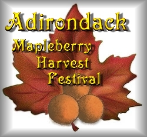

Short wooden stilts called 'Pickin' Boosters' were used by the women to reach the uppermost branches of the bush. The picking was done according to strict protocol and this never varied. The younger girls would use the stilts while their mothers would pick from a standing position. The more elderly ladies picked while perched on stools resembling milking stools. These were painted bright colors and were called 'pickin' perches'. The pickers would fill large baskets made from stitched Birch bark, which had long deerskin straps attached to the tops. The straps would allow the baskets to hang on the shoulder, allowing both hands to be free to pick. As the baskets were filled, the unmarried girls would carry them to the 'Dancing Area', where the contents would be poured into the 'Stomping Vats'. The men, who had been cheerfully and loudly enjoying last years Mapleberry wine all morning and were in good spirits by this time, would be eagerly waiting to begin their part of the ritual.
A country band, composed mainly of fiddles, harmonicas and banjos and featuring the most talented local musicians, would play vigorously as the men attempted to keep time with the music and squash the berries rhythmically beneath their bare feet. Because of the effects of the wine this was sometimes difficult and produced giggles from the female pickers whenever one of the dancers would slip and fall into the sticky syrup. The first 'Berry Dancer' would stomp until exhausted and then would signal the next man in line to step in. Amidst much laughter and shouting of encouragement from the onlookers the next dancer would take his place, each in turn trying to outdo the last.
The Adirondack Mapleberry Harvest Festival was a time of boisterous celebration and merriment among the early Adirondackers. Mountain folks from miles around would gather in the orchard, each bearing baskets of assorted foods for the traditional Feast Of The Harvest.
These festivities would go on until all the berries were crushed, which would always take them into the wee hours of the morning. The juice was boiled for a short duration in large tanks and the next morning the final product was bottled in gallon jugs. The skins were left in the vats for a week to ferment, then mixed with ingredients know only to the 'Grand Mixer'. This mash was then allowed to ferment for another week. The result of this process was a potent beverage called 'Mapleberry Wine'. This wine was then ceremoniously placed in Hickory casks and transported with great care to the 'curing caves', for the final curing. These 'curing caves' were located on the South side of Mt. Pisgah and the entrances were blocked by huge boulders. The brew was allowed to age for a year and attained a zesty, full bodied flavor. It was said that the flavor would improve with age and this theory was proven many years later quite by accident. In 1964 mayor Howard Riley, while picking Beechnuts on the mountain, wandered into one of the caves where he discovered a mis-placed keg. Upon tasting the contents he exclaimed, "The quality of this beverage is superior to anything I've ever tasted!" This was quite a compliment coming from the mayor, as he had tasted many high quality beverages in his day.
The yearly ritual of Adirondack Mapleberry Harvest Festival happily carried on until the early 1800's when, unfortunately, the Adirondack Mapleberry Bush became a victim of 'Pyrralta Saccharum Luteola', an insect closely related to the Elm Leaf Beetle. This pest was quite fond of Mapleberry leaves and, in short time, it decimated the entire Adirondack Mapleberry crop and along with it the great tradition of the 'Adirondack Mapleberry Harvest Festival'. As the years passed only memories of the harvest remained and soon even those memories were gone.
Thanks to the diligence of Lane Knight, an amazing discovery was recently made that promises to bring back this long lost tradition. Before the Mapleberry blight had struck, Ray Fadden, a Native American botanist, had secretly filled a deerskin pouch with some Mapleberry seeds and put them away for future use. Over the years the hidden seeds had been forgotten but two years ago Lane discovered a strip of Birch bark with some barely legible notations inscribed on it. The manuscript had been partially eaten by hungry mice but it was clear by what Mr. Knight was able to read that a pouch of Mapleberry seeds had been saved and could very well still be located somewhere in the Onchiota area.
The discovery of the mystery pouch occured while the amateur botanist and popular newspaper columnist was rummaging through Bing Tormey's old general store in search of Bing's collection of exotic dried mushrooms, which he had always kept on hand for medicinal purposes. It was during this search that Lane chanced upon a dusty leather pouch. Inside he discovered a handful of dried seeds and knew immediatly what they were. Lane promptly planted some of those seeds in his 'hydroponic garden', which is located in his cellar, and found that they were indeed the long lost Mapleberry seeds! Lane could hardly contain his excitement but kept his find secret for two years. Lane now has several dozen of the bushes growing in his backyard and they are healthy and will soon be ready for the initial harvest.
He has aquired financial support from a well established and very large department store whose name he declines to devulge at this time. The big box store has also agreed to handle the merchandising of the Mapleberry products. Mr. Knight is now in the process of organizing a group of Adirondackers interested in bringing back the age-old tradition of the Adirondack Mapleberry Harvest Festival. He is also now hiring local pickers and stompers.
The potential publicity from this venture is sure to once more establish the little village of Onchiota as a top tourist destination and the resulting profits, he assures us, will surely overflow into Saranac Lake and the surrounding villages. "It's been a long time coming,", he says, "but it was well worth the wait."